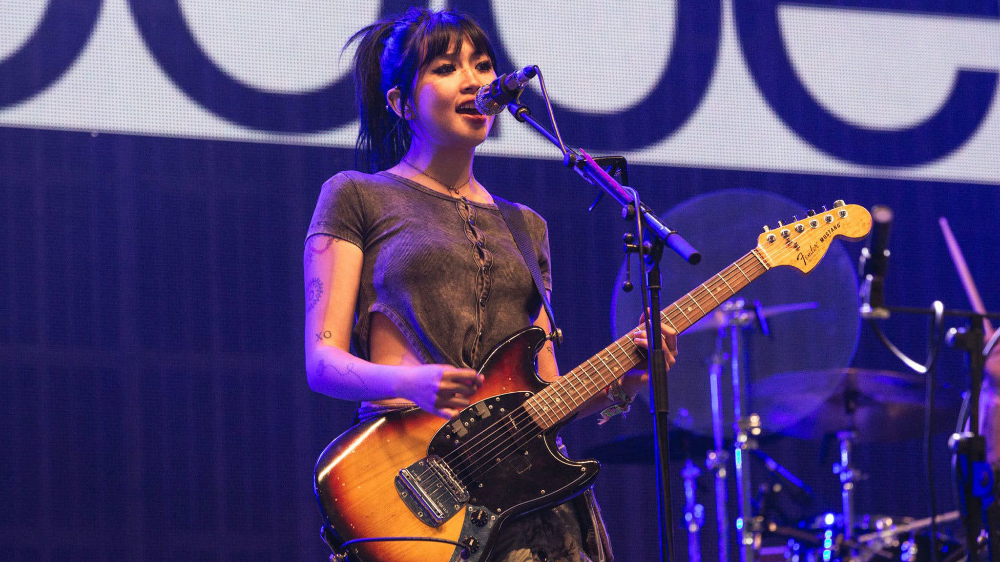
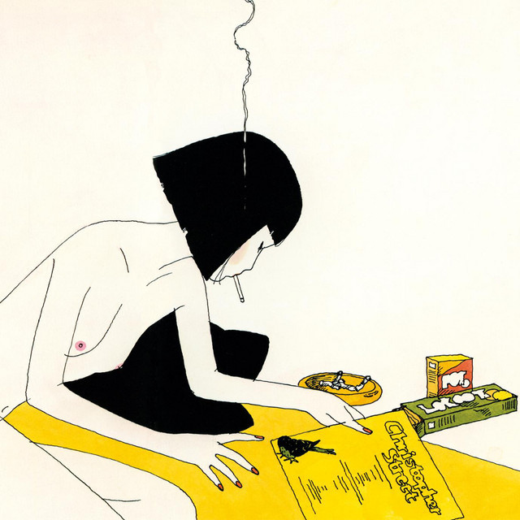

Music
This is my music page! Here I'll share music that I've made, and talk about music that I like. Hopefully on this page, you'll get to know me better and learn more throughout my music.
When I make music, typically I don't have a genre in mind. I don't like to limit myself to a certain genre, I just like remaking what I hear! But in particular, my favorite artists are beabadoobee, NewJeans, and Lamp.

beabadoobee
NewJeans

Lamp
This track, "call me if u can", is based on instrumentals I used to listen to in high school. It is inspired sort of by video game music, and lo-fi songs that I would listen to in quarantine. I'm still working up the courage to sing and release my voice on the internet, so these are still just instrumentals. Give it a listen!